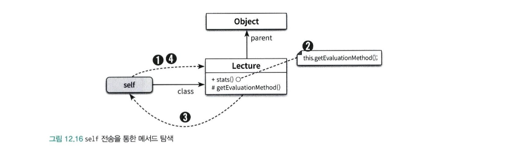

상속의 오해와 진실
코드 재사용을 목적으로 상속을 사용하면 변경하기 어렵고 유연하지 못한 설계에 이를 확률이 높아진다.
상속의 목적은 코드 재사용이 아니다.
상속은 타입 계층을 구조화하기 위해 사용해야 한다.
타입 계층은 객체지향 프로그래밍의 중요한 특성 중의 하나인 다형성의 기반을 제공한다.
객체지향 패러다임이 주목받기 시작하던 초기에 상속은 타입 계층과 다형성을 구현할 수 있는 거의 유일한 방법이었다.
하지만 최근의 언어들은 상속 이외에도 다형성을 구현할 수 있는 다양한 방법들을 제공하고 있다.
따라서 상속의 중요성이 이전에 비해 많이 낮아졌다.
다형성
다형성(Polymorphism) 이라는 단어는 ploy(많은) + morph(형태)의 합성어로 많은 형태를 가질 수 있는 능력을 의미한다.
다형성을 하나의 추상 인터페이스에 대해 코드를 작성하고 이 추상 인터페이스에 대해 서로 다른 구현을 연결할 수 있는 능력으로 정의된다.
다형성은 여러 타입을 대상으로 동작할 수 있는 코드를 작성할 수 있는 방법이다.
여러가지 다형성
객체지향 프로그래밍에서 사용되는 다형성은 그림과 같이 나눌 수 있다.
- 강제 다형성 : 언어가 지원하는 자동적인 타입 변환이나 사용자가 직접 구현한 타입 변환을 이용해 동일한 연산자를 다양한 타입에 사용할 수 있는 방식을 가리킨다.
- 예) 플러스 연산자 : 숫자 연산에서는 덧셈, 문자열 연산에서는 연결 연산자로 동작한다.
- 일반적으로 오버로딩 다형성과 강제 다형성을 함께 사용하면 모호해질 수 있는데 실제로 어떤 메서드가 호출될지를 판단하기가 어려워지기 때문이다.
- 오버로딩 다형성 : 일반적으로 하나의 클래스 안에 동일한 이름의 메서드가 존재하는 경우를 가리킨다
- 유사한 역할을 하는 메서드이지만 시그니처가 다른 경우 사용한다.
- 매개변수 다형성 : 제네릭 프로그래밍 과 관련이 깊다. 변수나 메서드의 매개변수 타입을 임의의 타입으로 선언한 후 사용하는 시점에 구체적인 타입으로 지정하는 방식
- 예) 자바의 List 인터페이스는 컬렉션에 보관할 요소를 임의의 타입 T로 지정하고 있다. 실제 인스턴스를 생성하는 시점에 T를 구체적인 타입으로 지정할 수 있게 한다.
List 인터페이스는 다양한 타입의 요소를 다루기 위해 동일한 오퍼레이션을 사용할 수 있다.
- 예) 자바의 List 인터페이스는 컬렉션에 보관할 요소를 임의의 타입 T로 지정하고 있다. 실제 인스턴스를 생성하는 시점에 T를 구체적인 타입으로 지정할 수 있게 한다.
- 포함 다형성 : 메시지가 동일하더라도 수신한 객체의 타입에 따라 실제로 수행되는 행동이 달라지는 능력을 의미
- 다른 말로 서브타입(Subtype) 다형성 이라고도 부른다.
- 일반적인 다형성을 얘기할 때 포함 다형성을 얘기한다.
상속의 양면성
객체지향 패러다임의 근간을 이루는 아이디어는 데이터와 행동을 객체라고 불리는 하나의 실행 단위 안으로 통합하는 것이다.
따라서 객체지향 프로그램을 작성하기 위해서는 항상 데이터와 행동이라는 두 가지 관점을 함께 고려해야 한다.
데이터 관점의 상속
상속을 이용하면 부모 클래스에서 정의한 모든 데이터를 자식 클래스의 인스턴스에 자동으로 포함 시킬 수 있다.
Lecture와 GradeLecture 두 가지 클래스가 있고, GradeLecture는 Lecture를 상속하고 있다고 하자
1 | public class Lecture { |
1 | public class GradeLecture extends Lecture { |
1 | Lecture lecture = new GradeLecture( |
실제 메모리 상의 GradeLecture의 인스턴스는 아래 그림과 같이 표현할 수 있다.
상속을 인스턴스 관점에서 바라볼 때는 개념적으로 자식 클래스의 인스턴스 안에 부모 클래스의 인스턴스가 포함되는 것으로 생각하는 것이 유용하다.
인스턴스를 참조하는 lecture는 GradeLecture의 인스턴스를 가리키기 때문에 특별한 방법을 사용하지 않으면 GradeLecture 안에 포함된 Lecture의 인스턴스에 직접 접근할 수 없다.

위와 같이 자식 클래스의 인스턴스는 자동으로 부모 클래스에서 정의한 모든 인스턴스 변수를 내부에 포함하게 된다.
행동 관점의 상속
상속을 이용하면 부모 클래스에서 정의한 일부 메서드를 자식 클래스에 포함 시킬 수 있다.
부모 클래스에 정의된 어떤 메서드가 자식 클래스에 포함될지는 언어의 종류와 각 언어에서 제공하는 접근 제어자의 의미에 따라 다르지만
공통적으로 부모 클래스의 모든 퍼블릭 메서드는 자식 클래스의 퍼블릭 인터페이스에 포함된다.
따라서 외부의 객체가 부모 클래스의 인스턴스에게 전송할 수 있는 모든 메세지는 자식 클래스의 인스턴스에도 전송할 수 있다.
부모 클래스의 퍼블릭 인터페이스가 자식 클래스의 퍼블릭 인터페이스에 합쳐지만 실제로 코드가 복사되어 합쳐지는 것은 아니다.
런타임에 시스템이 자식 클래스에 정의되지 않은 메서드가 있을 경우 이 메서드를 부모 클래스 안에서 탐색하기 때문이다.
메서드는 인스턴스 간 공유가 가능하다
객체의 경우에는 서로 다른 상태를 저장할 수 있도록 각 인스턴스별로 독립적인 메모리를 할당받아야 한다.
하지만 메서드의 경우에는 동일한 클래스의 인스턴스끼리 공유가 가능하기 때문에 클래스는 한 번만 메모리에 로드하고
각 인스턴스별로 클래스를 가리키는 포인터를 갖게 하는 것이 경제적이다.
아래와 그림과 같이 표현할 수 있다.
Lecture 객체에 대한 인스턴스는 메모리에 2개가 생성되었지만 실제 메서드를 실행할 때는 class 포인터를 이용하여 클래스에 접근한다.
부모 클래스에 접근하기 위해서는 parent 포인터를 이용하여 접근하는 것을 볼 수 있다.
따라서 각 객체에서 class 포인터와 parent 포인터를 조합하면 현재 인스턴스의 클래스에서 최상위 부모 클래스에 이르기 까지
모든 부모 클래스에 접근하는 것이 가능하다.
업캐스팅과 동적 바인딩
코드 안에서 선언된 참조 타입과 무관하게 실제로 메시지를 수신하는 객체의 타입에 따라 실행되는 메서드가 달라질 수 있는 것은
업캐스팅과 동적 바인딩이라는 메커니즘이 작용하기 때문이다.
- 업캐스팅: 부모 클래스 타입으로 선언된 변수에 자식 클래스의 인스턴스를 할당하는 것이 가능하다.
- 동적 바인딩: 선언된 변수의 타입이 아니라 메시지를 수신하는 객체의 타입에 따라 실행되는 메서드가 결정된다.
객체지향 시스템이 메시지를 처리할 적절한 메서드를 컴파일 시점이 아니라 실행 시점에 결정하기 때문이다.
개방-폐쇄 원칙과 의존성 역전 원칙
업캐스팅과 동적 메서드 탐색은 코드를 변경하지 않고도 기능을 추가할 수 있게 해주며 이것은 개방-폐쇄 원칙의 의도와도 일치한다.
개방-폐쇄 원칙은 유연하고 확장 가능한 코드를 만들기 위해 의존관계를 구조화하는 방법을 설명한다.
업캐스팅과 동적 메서드 탐색은 상속을 이용해 개방-폐쇄 원칙을 따르는 코드를 작성할 때 하부에서 동작하는 기술적인 내부 메커니즘을 설명한다.
개방-폐쇄 원칙이 목적이라면 업캐스팅과 동적 메서드 탐색은 목적에 이르는 방법이다.
업캐스팅
상속을 이용하면 부모 클래스의 퍼블릭 인터페이스가 자식 클래스의 퍼블릭 인터페이스에 합쳐지기 때문에 부모 클래스의 인스턴스에게 전송할 수 있는 메시지를 자식 클래스의 인스턴스에게 전송할 수 있다.
부모 클래스의 인스턴스 대신 자식 클래스의 인스턴스를 사용하더라도 메시지를 처리하는 데는 아무런 문제가 없다.
컴파일러는 명시적인 타입 변환 없이도 자식 클래스가 부모 클래스를 대체할 수 있게 허용한다.
1 | Lecture lecture = new GradeLecture(); |
부모 클래스 타입으로 선언된 파라미터에 자식 클래스 인스턴스를 전달하는 것도 가능하다.
1 | public class Professor { |
반대로 부모 클래스의 인스턴스를 자식 클래스 타입으로 변환하기 위해서는 명시적인 타입 캐스팅이 필요하다.
이를 다운캐스팅(downcasting) 이라고 한다.
1 | Lecture lecture = new GradeLecture(); |
동적 바인딩
전통적인 언어에서 함수를 실행하는 방법은 함수를 호출하는 것이다.
객체지향 언어에서 메서드를 실행하는 방법은 메시지를 전송하는 것이다.
이 두가지의 메커니즘은 완전히 다르다.
- 함수 호출
- 코드를 작성하는 시점에 호출될 코드가 결정된다.
- 컴파일 타임에 호출할 함수를 결정하는 방식을
정적 바인딩(static binding), 초기 바인딩(early binding), 컴파일타임 바인딩(compile-time binding) 이라고 부른다.
- 메서드 호출
- 메시지를 수신했을 때 실행될 메서드가 런타임에 결정된다.
- 실행될 메서드를 런타임에 결정하는 방식을 동적 바인딩(dynamic binding), 지연 바인딩(late binding) 이라고 부른다.
- 실행 시점에 어떤 클래스의 인스턴스에 메시지를 전달하는지 알아야 실제 실행되는 메서드를 알 수 있다.
동적 메서드 탐색과 다형성
객체지향 시스템은 다음 규칙에 따라 실행할 메서드를 선택한다.
- 메시지를 수신한 객체는 먼저 자신을 생성한 클래스에 적합한 메서드가 존재하는지 검사한다.
- 존재하면 메서드를 실행하고 탐색을 종료한다.
- 메서드를 찾이 못했다면, 부모 클래스에서 메서드 탐색을 계속한다.
- 메서드를 찾을 때까지 상속 계층을 따라 올라가며 계속된다.
- 상속 계층의 최상위 클래스에 이르렀지만 메서드를 발견하지 못한 경우 예외를 발생시키며 탐색을 중단한다.
self 참조 (self reference)
메시지 탐색과 관련해서 이해해야할 중요한 변수로 self 참조 (self reference) 라는 변수이다.
self 변수는 아래와 같이 동작한다.
- 객체가 메시지를 수신하면 컴파일러는 self 참조라는 임시 변수를 자동으로 생성한 후 메시지를 수신한 객체를 가리키도록 설정한다.
- 동적 메서드 탐색은 self가 가리키는 객체의 클래스에서 시작해서 상속 계층의 역방향으로 이뤄진다.
- 메서드 탐색이 종료되는 순간 self 참조는 자동으로 소멸된다.
- 자바에서는 self 참조를 this라고 부른다.
동적 메서드 탐색하기
self 참조를 통해 상속계층을 따라 동적으로 메서드 탐색이 이루어진다.
메서드 탐색은 자식 클래스에서 부모 클래스의 방향으로 진행된다.
따라서 항상 자식 클래스의 메서드가 부모 클래스의 메서드보다 먼저 탐색되기 때문에 자식 클래스에 선언된 메서드가
부모 클래스의 메서드보다 더 높은 우선 순위를 가진다.
동적 메서드 탐색은 두 가지 원리로 구성된다.
- 자동적인 메시지 위임 : 자식 클래스는 자신이 이해할 수 없는 메시지를 전송받은 경우 자동으로 상속 계층을 따라 부모 클래스에게 처리를 위임한다.
- 메서드를 탐색하기 위해 동적인 문맥을 사용 : 메시지를 수신했을 때 실제로 어떤 메서드를 실행할지는 런타임에 이뤄지며 self 참조를 이용해서 결정한다.
(self가 가리키는 인스턴스를 기준으로 탐색을 시작한다.)
메시지가 처리되는 문맥을 이해하기 위해서는 정적인 코드를 분석하는 것만으로는 충분하지 않다.
런타임에 실제로 메시지를 수신한 객체가 어떤 타입인지를 추적해야 한다.
이 객체의 타입에 따라 메서드를 탐색하는 문맥이 동적으로 결정되며, 여기서 가장 중요한 역할을 하는 것이 바로 self 참조다.
자동적인 메시지 위임
상속을 이용할 경우 메시지를 처리할 방법을 알지 못할 경우 메시지에 대한 처리를 부모 클래스에 위임한다.
적절한 메서드를 찾을 때까지 상속 계층을 따라 부모 클래스로 처리가 위임된다.
상속을 이용할 경우 프로그래머가 메시지 위임과 관련된 코드를 명시적으로 작성할 필요가 없다. 메시지는 상속 계층을 따라 자동적으로 위임된다.
자식 클래스 -> 부모 클래스의 방향으로 메시지 처리가 위임되기 때문에 자식 클래스에서 어떤 메서드를 구현하고 있느냐에 따라 부모 클래스에 구현된 메서드의 운명이 결정된다.
동적인 문맥
상속을 이용하면 메시지를 수신한 객체가 무엇이냐에 따라 메서드 탐색을 위한 문맥이 동적으로 바뀐다는 것이다.
이 동적인 문맥을 결정하는 것은 바로 메시지를 수신한 객체를 가리키는 self 참조다.
동일한 코드라고 하더라도 self 참조가 가리키는 객체가 무엇인지에 따라 메서드 탐색을 위한 상속 계층의 범위가 동적으로 변한다.
따라서 self 참조가 가리키는 객체의 타입을 변경함으로써 객체가 실행될 문맥을 동적으로 바꿀 수 있다.
self가 self에게
self 참조가 동적인 문맥을 결정한다는 사실은 종종 어떤 메서드가 실행될지를 예상하기 어렵게 만든다.
대표적인 경우가 자신에게 다시 메시지를 전송하는 self 전송이다.
1 | public class Lecture { |
stats() 메서드에서 getEvaluationMethod() 메시지를 전송하였다.
현재 클래스의 메서드를 호출 하는 것이 아닌 현재 객체에게 getEvaluationMethod를 전송하는 것이다.
즉 self 참조가 가리키는 객체에게 getEvaluationMethod 메시지를 전송한 것이다.
self 전송을 이해하기 위해서는 self 참조가 가리키는 바로 그 객체에서부터 메시지 탐색을 다시 시작한다는 사실이다.

이해할 수 없는 메시지
클래스는 자신이 처리할 수 없는 메시지를 수신하면 부모 클래스로 처리를 위임한다.
이해할 수 없는 메시지를 처리하는 방법은 정적 언어인지, 동적 언어인지에 따라 달라진다.
정적 타입 언어와 이해할 수 없는 메시지
정적 타입 언어에서는 코드를 컴파일할 때 상속 계층 안의 클래스들이 메시지를 이해할 수 있는지 여부를 판단한다.
따라서 상속 계층 전체를 탐색한 후에도 메시지를 처리할 수 있는 메서드를 발견하지 못했다면 컴파일 에러를 발생시킨다.
1 | Lecture lecture = new GradeLecture(); |
이 경우 상속 계층을 따라 unknownMessage를 처리할 수 있는 메서드가 존재하는 지 검색한다.
만약 최상위 클래스까지 탐색을 했는데 unknownMessage를 이해할 수 없다면 더 이상 부모 클래스가 존재하지 않기 때문에 컴파일 에러를 발생시켜 메시지를 처리할 수 없다는 사실을 프로그래머에게 알린다.
동적 타입 언어와 이해할 수 없는 메세지
동적 타입에서도 메시지를 수신한 객체의 클래스로 부터 부모 클래스의 방향으로 메서드를 탐색한다.
동적 타입 언어에서는 컴파일 단계가 존재하지 않기 때문에 실제로 코드를 실행해보기 전에는 메시지 처리 가능 여부를 판단할 수 없다.
몇 가지 동적 타입 언어는 최상위 클래스까지 메서드를 탐색한 후에 메서드를 처리할 수 없다는 사실을 발견하면 self 참조가 가리키는 현재 객체에게 메시지를 이해할 수 없다는 메시지를 전송한다.
- 스몰토크 : doesNotUnderstand 메시지를 전송한다
- 루비 : method_missing 메시지를 전송한다
이해할 수 없는 메시지를 처리할 수 있는 동적 타입 언어는 좀 더 순수한 관점에서 객체지향 패러다임을 구현한다고 볼 수 있다.
협력을 위해 메시지를 전송하는 객체는 메시지를 수신한 객체의 내부 구현에 대해 알지 못한다.
단지 객체가 메시지를 처리할 수 있다고 믿고 메시지를 전송할 뿐이다.
동적 타입 언어는 이해할 수 없는 메시지를 처리할 수 있는 능력을 가짐으로써 메시지가 선언된 인터페이스와 메서드가 정의된 구현을 분리할 수 있다.
하지만 동적 타입 언어의 이러한 동적인 특성과 유연성은 코드를 이해하고 수정하기 어렵게 만든다.
정적 타입 언어에는 이런 유연성은 부족하지만 컴파일타임에 확인되고 이해할 수 없는 메시지는 컴파일에러로 이어져 좀 더 안정적이다.
super
자식 클래스에서 부모 클래스의 구현을 재사용해야 하는 경우가 있다.
대부분의 객체지향 언어들은 자식 클래스에서 부모 클래스의 인스턴스 변수나 메서드에 접근하기 위해 사용할 수 있는 super 참조라는 내부 변수를 제공한다.
1 | public class GradeLecture extends Lecture { |
1 | public class FormattedGradeLecture extends GradeLecture { |

super 참조의 정확한 의도는 지금 self 참조가 가리키는 클래스의 부모 클래스에서 부터 메서드 탐색을 시작하세요 이다.
만약 부모 클래스에서 원하는 메서드를 찾지 못한다면 더 상위의 부모 클래스로 이동하면서 메서드가 존재하는지 검사한다.
이것은 super 참조를 통해 실행하고자 하는 메서드가 반드시 부모 클래스에 위치하지 않아도 되는 유연성을 제공한다.
그 메서드가 조상 클래스 어딘가에 있기만 하면 성공적으로 탐색될 것이기 때문이다.
이 처럼 super 참조를 통해 메시지를 전송하는 것을 super 전송(super send) 이라고 부른다.
super 전송과 동적 바인딩
상속에서 super가 컴파일 시점에 미리 결정된다고 설명했지만 super를 런타임에 결정하는 경우도 있다.
믹스인을 사용하는 경우에는 런타임에 동적으로 결정된다.
스칼라의 traits는 super의 대상을 믹스인 되는 순서에 따라 동적으로 결정한다.
따라서 사용하는 언어의 특성에 따라 컴파일 시점이 아닌 실행 시점에 super의 대상이 결정될 수도 있다는 점을 기억해야 한다.
위임과 self
상속을 이용하면 자식 클래스에서 메시지를 처리하지 못하는 경우 상속 계층에 따라 메시지를 위임한다.
이 경우 self참조는 무엇을 가리키는가?
메시지를 위임하더라도 self는 맨 처음 메시지를 수신한 객체를 가리킨다.
프로토타입 기반의 객체지향 언어
다른 언어에서는 클래스가 아닌 객체를 이용해서도 상속을 흉내내고 있다.
클래스가 존재하지 않고 오직 객체만 존재하는 프로토타입 기반의 객체지향 언어에서 상속을 구현하는 유일한 방법은 객체 사이의 위임을 이용하는 것이다.
클래스 기반의 객체지향 언어들이 상속을 이용해 클래스 사이에 self 참조를 자동으로 전달하는 것처럼 프로토타입 기반의 객체지향 언어들 역시 위임을 이용해 객체 사이에 self 참조를 자동으로 전달한다.
현재 가장 널리 사용되는 프로토타입 기반의 객체지향 언어는 자바스크립트 이다.
자바스크립트의 모든 객체들은 다른 객체를 가리키는 용도로 사용되는 prototype 이라는 이름의 링크를 가진다.
prototype은 언어 차원에서 제공되기 때문에 self 참조를 직접 전달하거나 메세지 포워딩을 번거롭게 구현하지 않아도 된다.
1 | function Lecture(name, scores) { |
자바스크립트의 인스턴스는 메시지를 수신하면 먼저 메시지를 수신한 객체의 prototype 안에서 메시지에 응답할 적절한 메서드가 있는지 검사한다.
만약 메서드가 존재하지 않는다면 prototype이 가리키는 객체를 따라 메시지 처리를 자동적으로 위임한다.
자바스크립트에서는 prototype 체인으로 연결된 객체 사이에 메시지를 위임함으로써 상속을 구현할 수 있다.
1 | function GradeLecture(name, canceled, scores) { |
위의 코드에서는 GradeLecture의 prototype에 Lecture 인스턴스를 할당했다.
이 과정을 통해 GradeLecture를 이용해 생성된 모든 객체들이 prototype을 통해 Lecture에 정의된 모든 속성과 함수에 접근할 수 있게 된다.
이제 메시지를 전송하면 prototype으로 연결된 객체 사이의 경로를 통해 객체 사이의 메서드 탐색이 자동으로 이뤄진다.
1 | var grade_lecture = new GradeLecture("OOP", false, [1, 2, 3]); |

자바스크립트에서는 클래스가 존재하지 않기 때문에 오직 객체들 사이의 메시지 위임만을 이용해 다형성을 구현한다.
이것은 객체지향 패러다임에서 클래스가 필수 요소가 아니라는 점을 잘 보여준다.
또한 상속 이외의 방법으로도 다형성을 구현할 수 있다는 사실을 잘 보여준다.
참고
- Objects(코드로 이해하는 객체지향 설계) - chapter12. 다형성